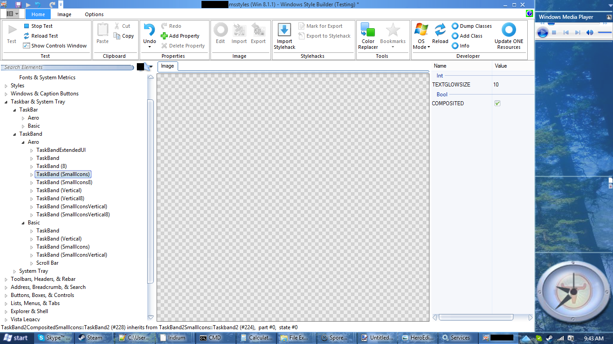
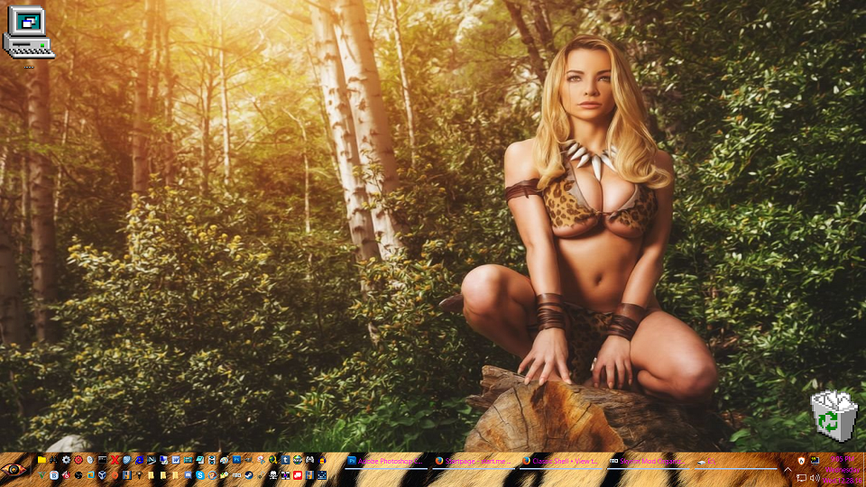
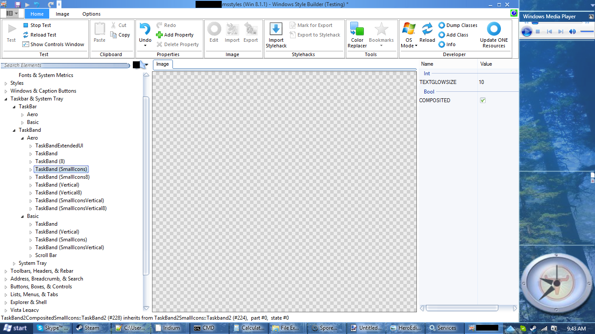

scooterrodriguez wrote:
I want to believe.
Then believe you shall. All it takes is a few small changes to an MsStyles and a UxTheme patch or alternative.

See? Text glow
| Classic Shell http://www.classicshell.net/forum/ |
|
| Making taskbar text stand out http://www.classicshell.net/forum/viewtopic.php?f=13&t=7211 |
Page 1 of 1 |
| Author: | scooterrodriguez [ Wed Dec 28, 2016 7:09 pm ] |
| Post subject: | Making taskbar text stand out |
It was a godsend when Classic Shell allowed us to finally change the color of the text in the taskbar. But please, sir, may we have some more? Is there any way to add a glow around the text in the taskbar to make the text easier to read if we're using a taskbar that has both light and dark colors? Por ejemple:  |
|
| Author: | scooterrodriguez [ Wed Dec 28, 2016 10:27 pm ] |
| Post subject: | Re: Making taskbar text stand out |
I want to believe. |
|
| Author: | Splitwirez [ Thu Dec 29, 2016 7:46 am ] |
| Post subject: | Re: Making taskbar text stand out |
scooterrodriguez wrote: I want to believe. Then believe you shall. All it takes is a few small changes to an MsStyles and a UxTheme patch or alternative.  See? Text glow |
|
| Author: | scooterrodriguez [ Fri Dec 30, 2016 12:56 pm ] |
| Post subject: | Re: Making taskbar text stand out |
That's great, Splitwirez, but how does one do that? |
|
| Author: | Splitwirez [ Fri Dec 30, 2016 5:37 pm ] |
| Post subject: | Re: Making taskbar text stand out |
scooterrodriguez wrote: That's great, Splitwirez, but how does one do that? ...by modifying an MsStyles file and using a UxTheme patch to apply it? Like I said above...? |
|
| Author: | scooterrodriguez [ Fri Dec 30, 2016 5:48 pm ] |
| Post subject: | Re: Making taskbar text stand out |
Sorry for misunderstanding. Looks like it's a bit above my current skillset. Thank you anyway. |
|
| Author: | juniper7 [ Fri Dec 30, 2016 8:08 pm ] |
| Post subject: | Re: Making taskbar text stand out |
Splitwirez. Would it be possible for you to make an MsStyle to share, that has everything else on default system values, except that added taskbar glow? Could it work for Win 7/10, as well as 8.1? That would really be super if it could work. It would be a New Years present to the world! |
|
| Page 1 of 1 | All times are UTC - 8 hours [ DST ] |
| Powered by phpBB® Forum Software © phpBB Group https://www.phpbb.com/ |
|